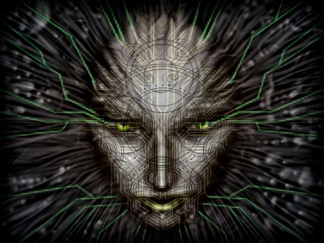
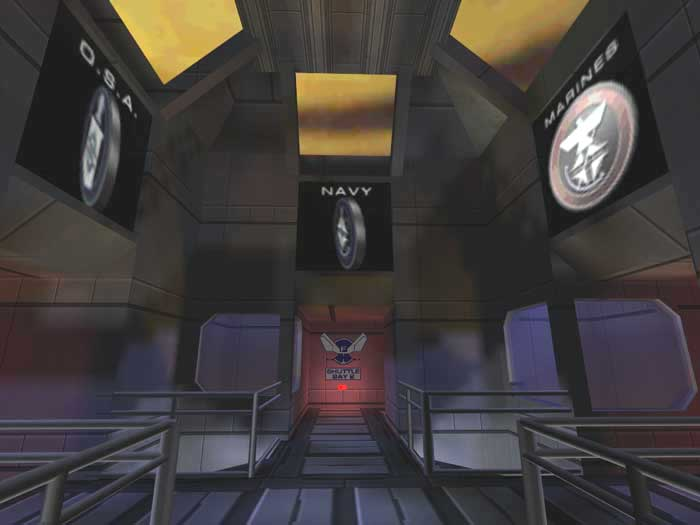
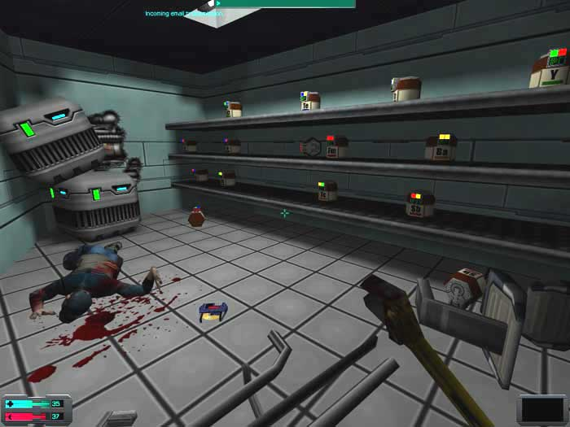

Game review by : Mr. Roboto
Year : 1999
Developer : Looking Glass Studios
Degree of Cyberpunk visuals : High
Correlation to Cyberpunk themes : High
Rating : 10/10

I never forget a face. Sometimes, I wish I could.
When the original System Shock was released 1994, most probably didn't realize what new grounds would be broken in terms of first-person shooters. Five years later, history would repeat as a second Shock would not only improve upon the original, but totally raise the bar for games to come. System Shock 2 raised the stakes with improved 3D graphics, new weapons and abilities, a cooperative multiplayer option, and a new story with enough twists to keep you playing until the end.
The post-Citadel story. TriOptimum tried their best to keep the events aboard the Citadel space station under wraps, but word eventually leaked out about Edward Diego, his hacker, and SHODAN. The outrage caused the formerly ineffectual governments to form the Unified National Nominate, the UNN. They fight TriOptimum using the most powerful weapon they have: bureaucracy. TriOptimum started fighting back with their corporate-military forces. Eventually, a truce was borne of a stalemate between TriOptimum and the UNN, but technological advances slow to a crawl as many blame the UNN for Earth's slow death.
Then, a major breakthrough : a device that warps time and space around it enables faster-than-light travel. A joint TriOptimum/UNN deep-space venture is solidified as the corporate starship Von Braun will be traveling with the UNN Rickenbacker riding piggy-back, literally. The launch occurs in 2114, some 42 years after Citadel.
Five months into the mission, the tandem receives a signal from Tau Ceti V. An away team from the two vessels return from the planet's surface with artifacts and what appears to be large egg-like cases.
That's when things go fruit-loopy...
Three years before launch... You arrive at the UNN Recruitment Center with hopes of being onboard the Von Braun/Rickenbacker when they make history. Before that, however, you will have to go through some training to prepare for the possible dangers you will face. Newbies should take advantage of the Basic Training area to familiarize themselves with the game's controls and interfaces. Then it's off to Advanced Training where you can experience some of the fun things you'll do with the three branches of the UNN military machine. From there, it's off the shuttle bays where you will be taken to a station to begin a three-year training program of three one-year tours of duty where you can build up your stats in weapons, technical skills, physical attributes, and maybe some psionic skills.

Here are the three military branches of the UNN:
Your adventure aboard the Von Braun/Rickenbacker tandem actually begins in a cryo-tube with some military-grade implants and memories lost due to a computer glitch. Dr. Janice Polito contacts you, wanting you to meet her in her office on deck four to discuss what has happened to the two ships and how to correct the problem. Getting there won't be easy.
Cyberspace gives way to connect the dots. One important change in System Shock 2 is the lack of cyberspace sequences, although there are the VR booths in the training center. Instead, an odd game of "connect the dots" is used for hacking, repair, and weapon modification. If you choose to "play", you need to light three dots or "nodes" in a straight line to succeed. There may be a node outlined in red (ICE nodes) that require extra caution, as causing these to go dark will cause an immediate failure. What that failure entails depends on the device.
Research... and destroy. Another change is that some items require research. Some items only give information on how to best kill enemies. Others require research before they can be used. There are chemical storerooms where you can find the chemicals you may need to complete your research.

A worthy successor. Like Quake was to Doom, System Shock 2 is a worthy successor to the original System Shock. A trip through the corridors of the Von Braun/Rickenbacker tandem will show you how it improves on the original.